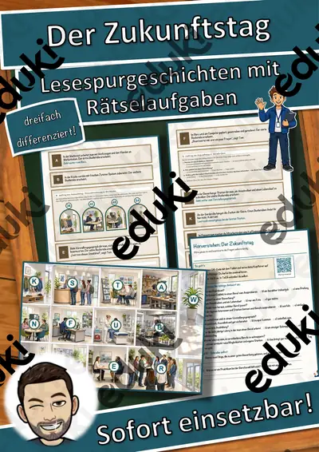
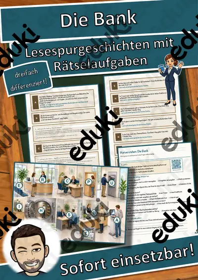
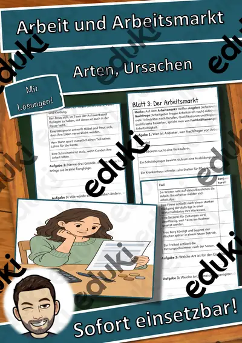
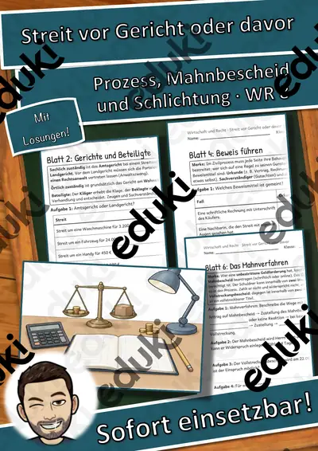
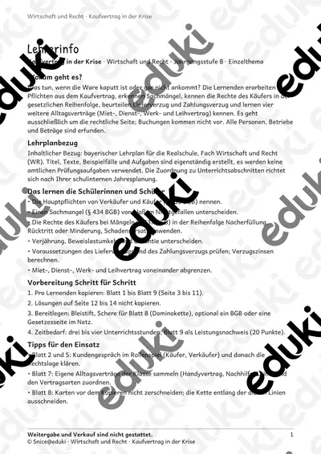
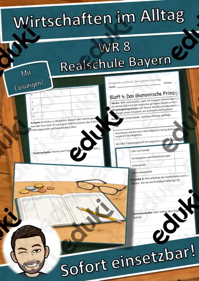
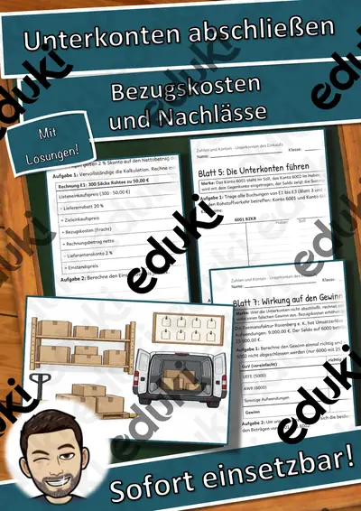

Der Zukunftstag – Lesespurgeschichte mit Rätselaufgaben (Klasse 8)

Die Bank – Lesespurgeschichte mit Rätselaufgaben (Klasse 8)

Konsum und Werbung – Prüfungstraining Wirtschaft (Klasse 8)
Belege lesen und kontieren – Arbeitsheft mit Lösungen (BwR 8, Realschule Bayern)

Agentur für Arbeit – Arbeitsheft mit Lösungen (WR 8, Realschule Bayern)

Arbeit und Arbeitsmarkt – Arbeitsheft mit Lösungen (WR 8, Realschule Bayern)

Streit vor Gericht oder davor – Arbeitsheft mit Lösungen (WR 8, Realschule Bayern)

Kaufvertrag in der Krise – Arbeitsheft mit Lösungen (WR 8, Realschule Bayern)

Eigentum und Besitz: auch geistiges Eigentum – Arbeitsheft mit Lösungen (WR 8, Realschule Bayern)

Rechtsfähigkeit: Strafmündigkeit und Jugendschutz – Arbeitsheft mit Lösungen (WR 8, Realschule)

Recht verstehen – Arbeitsheft mit Lösungen (WR 8, Realschule Bayern)

Kundenbindung und soziale Medien – Arbeitsheft mit Lösungen (WR 8, Realschule Bayern)

Verbraucher online – Arbeitsheft mit Lösungen (WR 8, Realschule Bayern)

Klug kaufen im Netz – Arbeitsheft mit Lösungen (WR 8, Realschule Bayern)

Wirtschaften im Alltag – Arbeitsheft mit Lösungen (WR 8, Realschule Bayern)

Verkaufspreis: kalkulieren und buchen – Arbeitsheft mit Lösungen (BwR 8, Realschule Bayern)

Unterkonten abschließen: Bezugskosten und Nachlässe – Arbeitsheft mit Lösungen (BwR 8, Realschule)

Materialverbrauch – Arbeitsheft mit Lösungen (BwR 8, Realschule Bayern)

Buchen am Bildschirm – Arbeitsheft mit Lösungen (BwR 8, Realschule Bayern)

Der Jahresverlauf im Unternehmen – Arbeitsheft mit Lösungen (BwR 8, Realschule Bayern)

Personalaufwand buchen – Arbeitsheft mit Lösungen (BwR 8, Realschule Bayern)

Ausbildungsvertrag Basics – Bewerbung & Praktikum, 3 Stufen, mit Hilfen & Lösungen (Klasse 7–10)

Verhalten im Betrieb – Bewerbung & Praktikum, 3 Stufen, mit Hilfen & Lösungen (Klasse 7–10)

Arbeitsschutz & Jugendarbeitsschutzgesetz – Bewerbung & Praktikum, 3 Stufen, mit Hilfen & Lösungen (Klasse 7–10)

Vizekanzler und Bundesminister der Finanzen - Lars Klingbeil
Keine Materialien gefunden – versuch einen anderen Suchbegriff oder Filter.